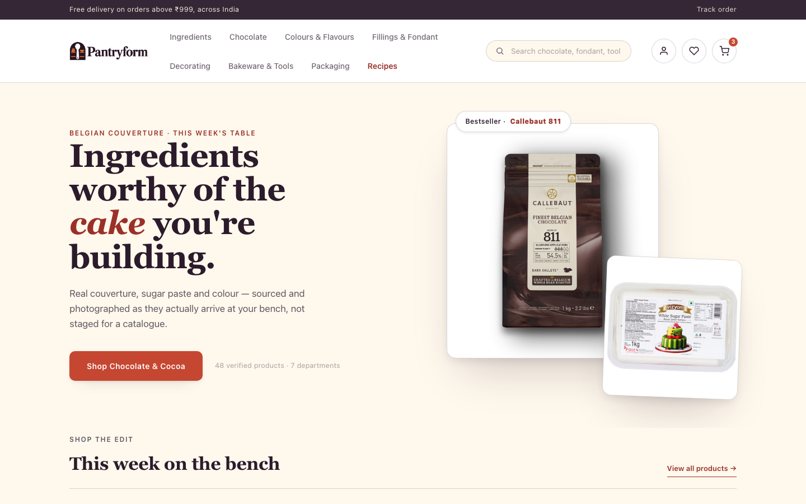
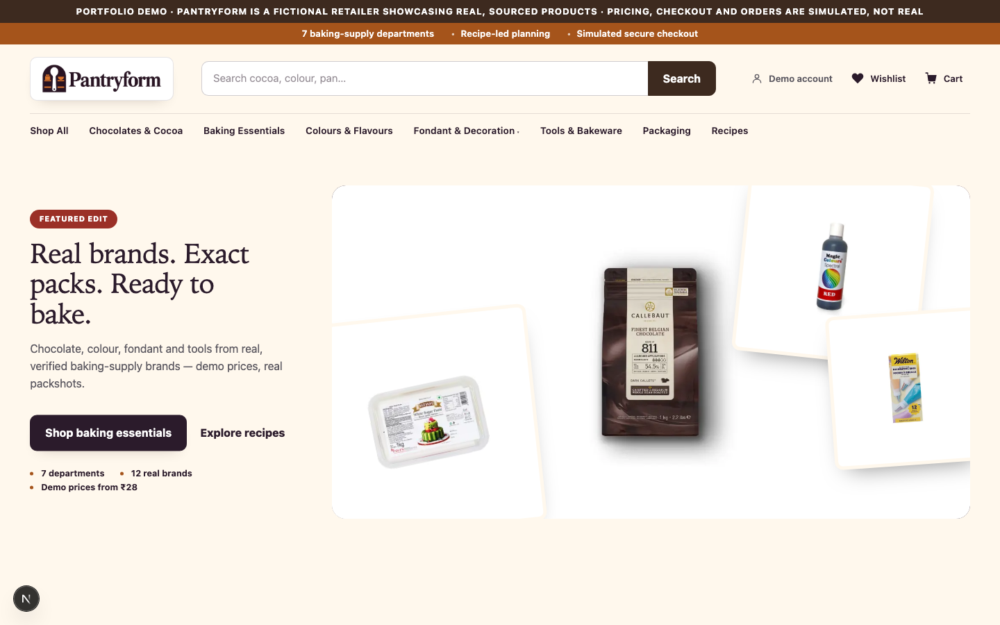
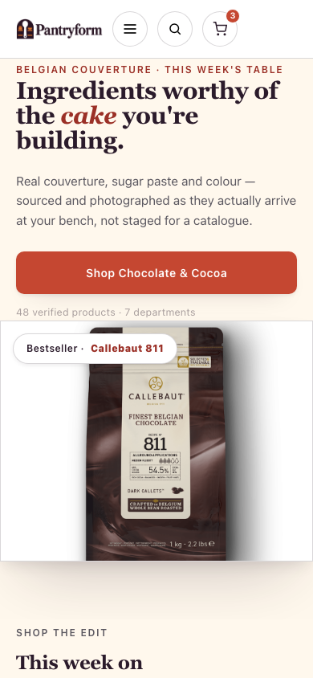
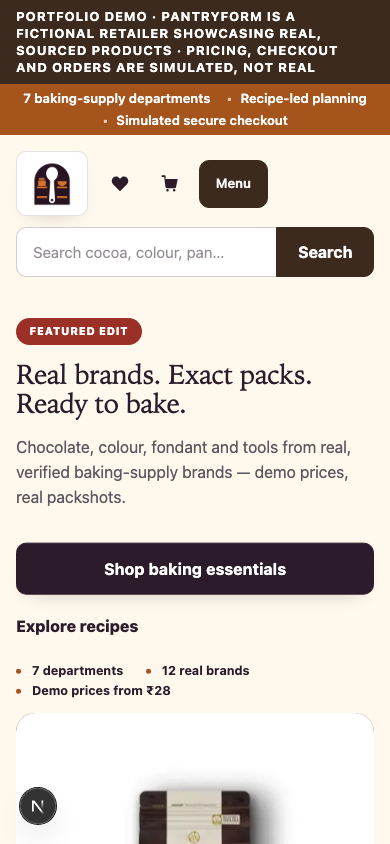
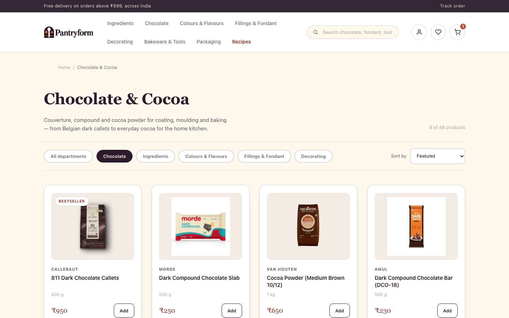
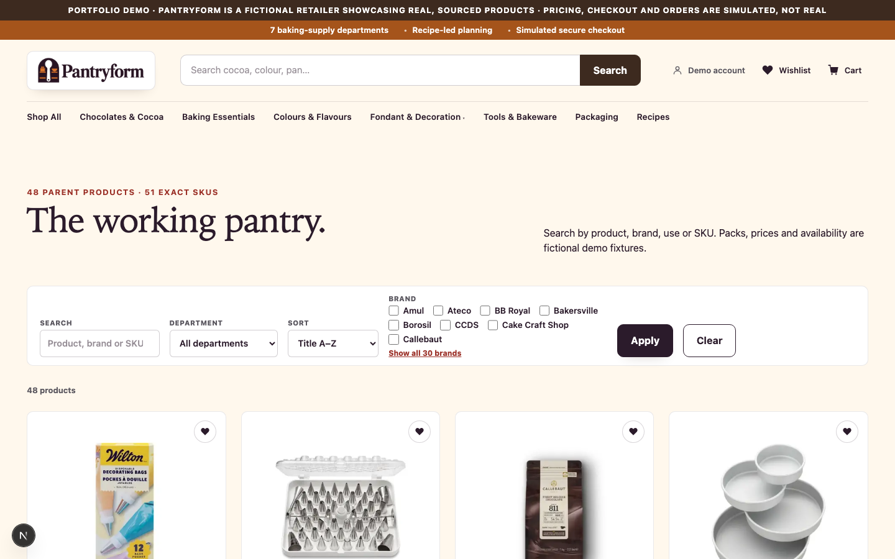
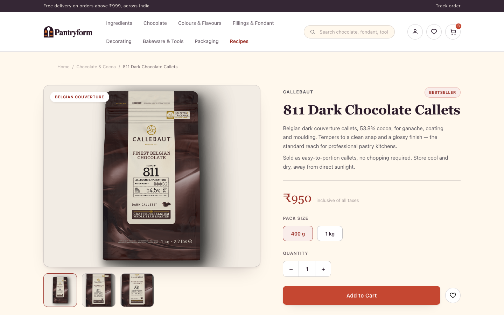
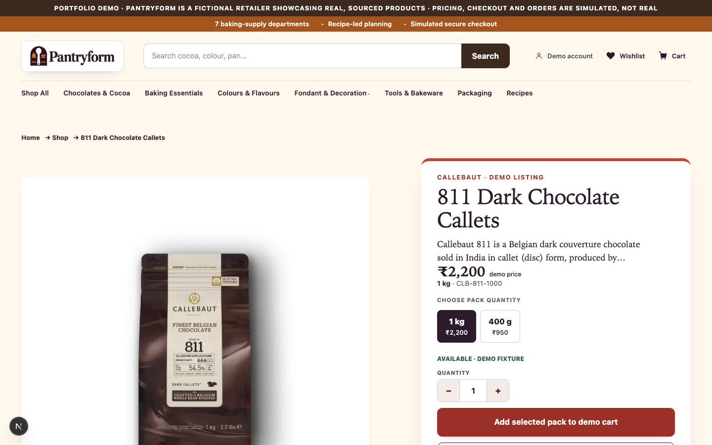
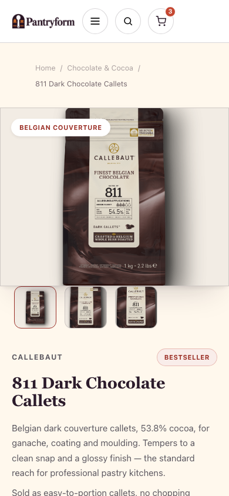
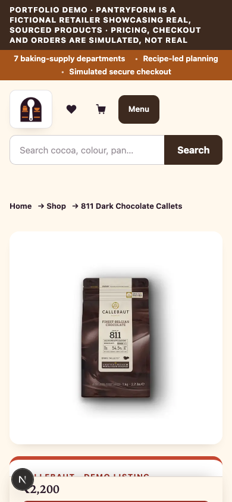

Side-by-side comparison of the externally-selected Concept A: Modern Ingredient Atelier
static HTML/CSS prototype (design_review/recovery_r2b2_direction/concept-a/) against the
real, shipped Next.js implementation on recovery/real-commerce-visuals after the locked
direction (Concept A primary + Concept C grid/taxonomy borrow + Concept B mobile sticky CTA borrow) was
built into the live application. The final implementation is not a copy of the prototype — it inherits
the prototype's warm restrained palette, serif/sans pairing and staged-photography composition while
working within the real app's existing architecture, real cart/wishlist/checkout state, and the narrow
borrows from Concepts B and C the external review specified.









